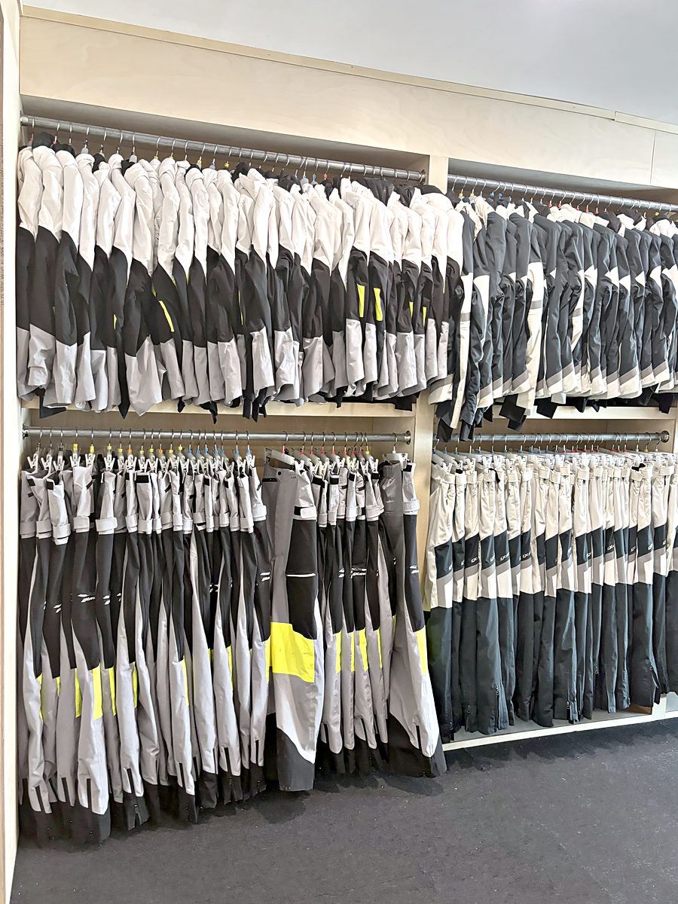
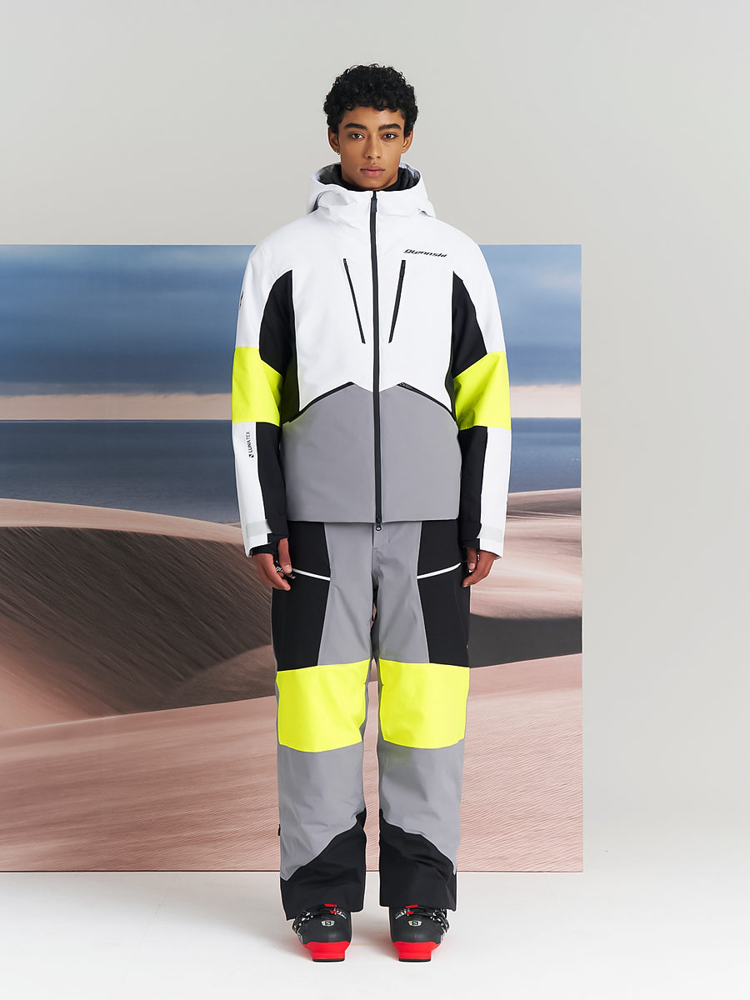
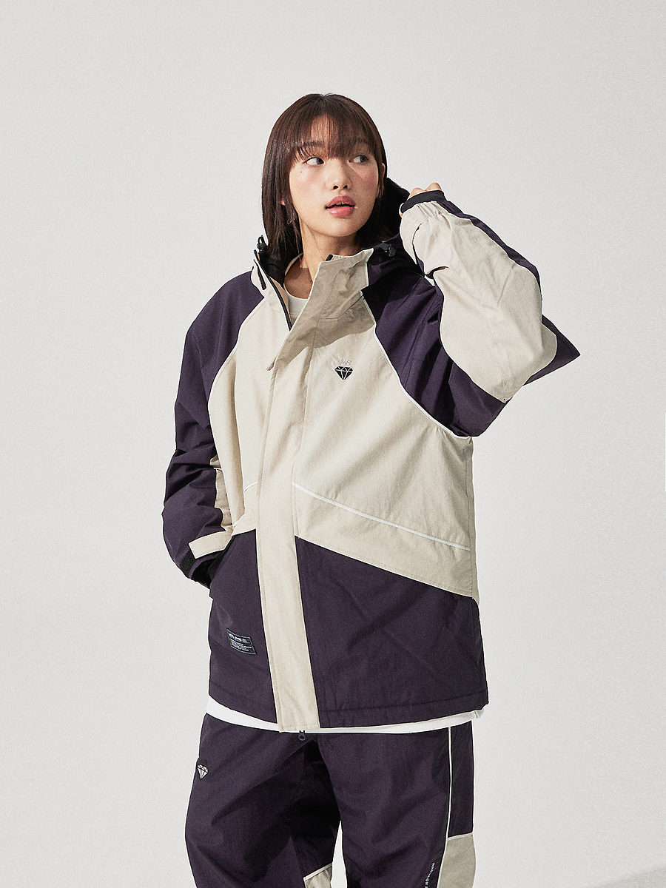
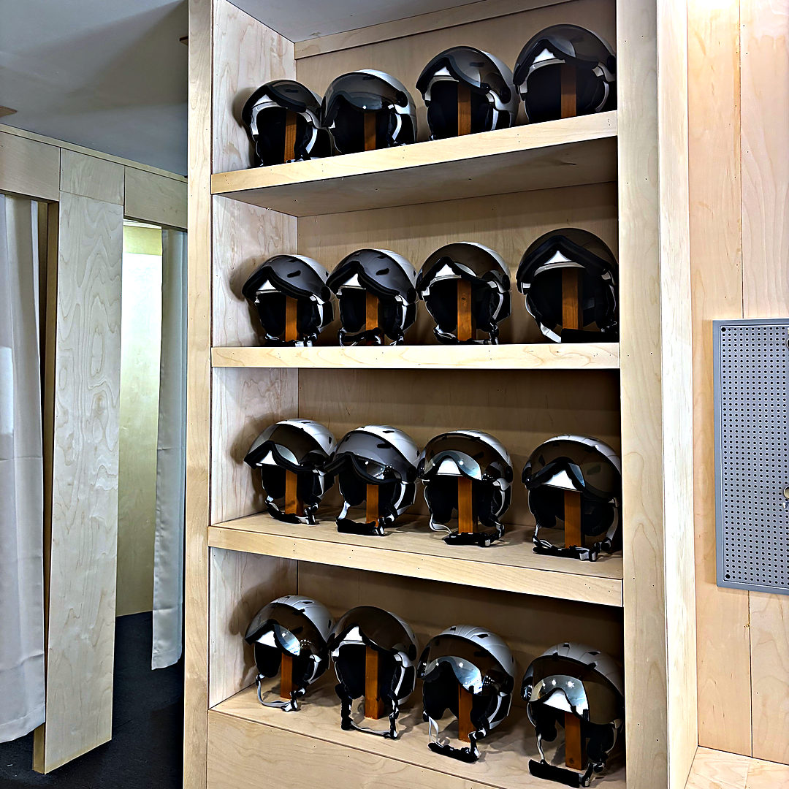

Season Dates · 2026/27
무주리조트 2026/27 개장일은 11월 27일(금) 예정

무주덕유산리조트는 2026/27 동계 시즌을 2026년 11월 27일(금)에 오픈할 예정입니다. 리조트는 11월 19일 첫 제설을 시작했고, 기상 상황에 따라 날짜가 바뀔 수 있다고 안내했습니다. 폐장일은 2026년 11월 23일 기준 아직 공지되지 않았습니다.
- 개장 예정11월 27일(금)
- 첫 제설11월 19일
- 폐장일공지 전
- 주간 운영09:00~16:30
개장일은 어디서 발표됐나요?
리조트 공식 홈페이지의 덕유산 현장소식에 2026년 11월 20일 08:50 기준으로 올라온 내용입니다. 이날 아침 눈이 많이 내려 설천봉 적설량이 14cm였고, 11월 19일 첫 제설을 시작해 제설 2일차라고 안내했습니다. 같은 글에 "11월 27일(금) 동계시즌 오픈 예정이며 기상 상황에 따라 변경될 수 있다"고 적혀 있습니다.
- 공식 공지사항: 2026-11-19 "동계 첫 제설 안내"가 올라왔습니다.
- 26/27 시즌권 안내: 이용 기간이 "2026년 개장일 ~ 2027년 폐장일"로만 적혀 있어 폐장일은 아직 날짜가 없습니다.
- 스키장 운영 캘린더: 11월 23일 확인 기준 11월·12월 날짜별 운영 표시는 아직 비어 있습니다.
개장일에는 어떤 슬로프가 열리나요?
개장일에 여는 슬로프는 아직 공식 안내가 없습니다. 11월 20일 현장소식 기준으로 제설 중인 곳은 스피츠 하단, 커넥션, 스키학교 슬로프입니다. 시즌 초에는 눈 상태에 따라 슬로프를 순서대로 여는 경우가 많으니, 가기 전날 리조트 스키장 운영현황에서 운영 슬로프를 확인하세요.
시즌 중 운영시간은 어떻게 되나요?
| 구분 | 운영시간 |
|---|---|
| 새벽 | 07:00~09:00 |
| 주간 | 09:00~16:30 |
| 야간 | 18:30~22:00 |
| 자정 | 22:00~24:00 |
3월 3일(화)부터 주간 운영시간은 09:30~16:00으로 바뀝니다. 새벽·자정 운영은 날짜마다 다르니 운영 캘린더에서 확인하세요. 시간대별 이용 팁은 무주리조트 운영시간·야간스키 안내에 따로 정리했습니다.
개장 초기에 가려면 무엇을 준비하나요?
- 1. 전날 운영 여부를 확인합니다.
기상에 따라 개장일이 바뀔 수 있으니 리조트 현장소식과 공지사항을 다시 봅니다. - 2. 리프트권 시간권을 고릅니다.
열린 슬로프가 적은 시즌 초에는 3·4시간권이 부담 없습니다. 요금은 리프트권 할인 안내에서 비교하세요. - 3. 렌탈을 예약합니다.
방문일과 인원, 필요한 품목을 넣으면 예상 금액이 바로 나옵니다. - 4. 가는 방법을 정합니다.
대중교통이라면 무료 셔틀 시간표를 먼저 확인하세요.
개장하면 어디서 장비를 빌릴까요?
무주놀러와스키샵은 덕유산리조트 정문 앞에서 26/27 시즌을 함께 시작합니다. 이번 시즌 신상 스키복과 헬멧을 매장에서 직접 보고 고를 수 있어요.




- 리조트 정문 바로 앞구천동로 1050, 덕유산리조트 정문 앞이라 장비를 받고 곧장 슬로프로 갑니다.
- 풀세트 40,000원장비·의류·헬멧·고글을 한 번에 빌리는 오픈 한정가입니다.
- 리프트권 13,000~25,000원 할인3·4·6시간권을 렌탈과 함께 예약하면 할인가가 바로 적용됩니다.
- 슬로프 앞 무료 배달예약할 때 픽업 장소를 남기면 장비를 슬로프 앞까지 가져다드립니다.
자주 묻는 질문
무주리조트 2026/27 개장일은 언제인가요?
무주덕유산리조트는 2026년 11월 27일(금) 동계 시즌 오픈 예정이라고 공식 현장소식(11월 20일)에 안내했습니다. 기상 상황에 따라 바뀔 수 있으니 방문 전날 다시 확인하세요.
무주리조트 2026/27 폐장일은 정해졌나요?
2026년 11월 23일 기준 폐장일은 공지되지 않았습니다. 시즌권 안내에도 이용 기간이 "2026년 개장일 ~ 2027년 폐장일"로만 적혀 있습니다.
개장일에 모든 슬로프가 열리나요?
개장일 운영 슬로프는 아직 공식 안내가 없습니다. 11월 20일 기준 제설 중인 곳은 스피츠 하단, 커넥션, 스키학교 슬로프이며, 당일 운영 슬로프는 리조트 스키장 운영현황에서 확인하세요.
무주리조트 스키장 운영시간은 어떻게 되나요?
공식 운영 캘린더 기준 주간 09:00~16:30, 야간 18:30~22:00이며 새벽 07:00~09:00, 자정 22:00~24:00 운영이 날짜별로 표시됩니다. 3월 3일부터 주간은 09:30~16:00입니다.